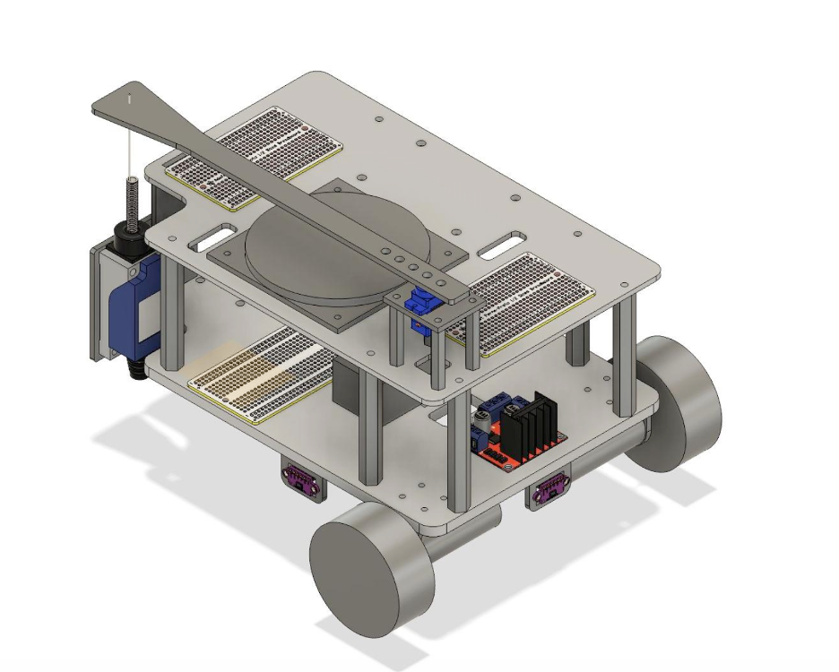

<!-- ================= PROJECTS SECTION ================= -->

<section id="projects" class="projects">
    <div class="section-inner">
        <div class="section-head">
            <span class="section-num">02</span>
            <h2>Projects</h2>
            <div class="section-rule"></div>
        </div>

        <!-- ===== AUTONOMOUS ROBOT (UPDATED WITH CAD) ===== -->
        <div class="project-feature">
            <div class="project-visual">
                <div class="project-images">
                    
                    
                </div>
            </div>
            <div class="project-content">
                <p class="project-kicker">Robotics · Embedded Systems · Controls</p>
                <h3>Autonomous Competition Robot</h3>

                <p>
                    Designed and fabricated a differential-drive autonomous robot with a laser-cut acrylic chassis, servo-actuated mechanism, multi-sensor system, and ESP32-S2 control architecture.
                </p>

                <p>
                    The robot was designed in Fusion 360 as a two-layer acrylic structure with a differential drive and rear caster for simple and reliable control.
                    The design prioritized manufacturability, modular mounting, and efficient wiring integration through dedicated cutouts and standoff-based assembly.
                </p>

                <p>
                    Key components such as ToF sensors, servo-mounted attacker arm, and electronic boards were integrated directly into the CAD, allowing fast fabrication via laser cutting 
                    and reducing iterations to just 1–2 cycles before finalizing the design.
                </p>

                <div class="project-specs">
                    <div><span>Hardware</span><strong>ESP32-S2, ToF sensors, servo mechanism</strong></div>
                    <div><span>Fabrication</span><strong>Laser cutting, 3D printing, assembly</strong></div>
                    <div><span>Control</span><strong>PD wall following, deadband filtering</strong></div>
                    <div><span>Result</span><strong>Quarterfinalist competition robot</strong></div>
                </div>
            </div>
        </div>

        <!-- ===== PANDA ARM (UNCHANGED) ===== -->
        <div class="project-feature">
            <div class="project-visual">
                <video class="project-video" autoplay muted loop playsinline>
                    <source src="panda-arm.mp4" type="video/mp4">
                </video>
            </div>
            <div class="project-content">
                <p class="project-kicker">Robotics · Kinematics · Vision</p>
                <h3>Pick and Place with 7 DOF Panda Arm</h3>

                <p>
                    Built a vision-based pick-and-place pipeline using forward and inverse kinematics, achieving reliable block stacking in simulation and hardware.
                </p>

                <p>
                    Improved dynamic block grasping robustness by shifting from predictive to reactive, geometry-based interception, reducing timing-related failures.
                </p>

                <div class="project-specs">
                    <div><span>Robot</span><strong>7 DOF Franka Panda Arm</strong></div>
                    <div><span>Methods</span><strong>Forward and inverse kinematics</strong></div>
                    <div><span>Pipeline</span><strong>Vision-based pick and place</strong></div>
                    <div><span>Result</span><strong>Reliable stacking</strong></div>
                </div>
            </div>
        </div>

        <!-- ===== THERMAL PROJECT (UNCHANGED) ===== -->
        <div class="project-feature">
            <div class="project-visual">
                
            </div>
            <div class="project-content">
                <p class="project-kicker">Thermal Analysis · FEA · Heat Transfer</p>
                <h3>Thermal Analysis of Annular Fins</h3>

                <p>
                    Designed and simulated rectangular and triangular annular fin geometries in SolidWorks and ANSYS to evaluate thermal performance.
                </p>

                <p>
                    Identified rectangular profile delivered 14.3% higher heat dissipation compared to triangular configuration.
                </p>

                <div class="project-specs">
                    <div><span>Tools</span><strong>SolidWorks, ANSYS</strong></div>
                    <div><span>Analysis</span><strong>Temperature and heat flux</strong></div>
                    <div><span>Result</span><strong>14.3% improvement</strong></div>
                    <div><span>Validation</span><strong>&lt;3% deviation</strong></div>
                </div>
            </div>
        </div>

        <!-- ===== GLASS ROBOT (UPDATED TO VIDEO) ===== -->
        <div class="project-feature">
            <div class="project-visual">
                <video class="project-video" autoplay muted loop playsinline>
                    <source src="glass-robot.mp4" type="video/mp4">
                </video>
            </div>
            <div class="project-content">
                <p class="project-kicker">Mechanical Design · BLDC · Prototyping</p>
                <h3>Wall-Climbing Glass Cleaning Robot</h3>

                <p>
                    Designed and prototyped a BLDC-driven reverse-thrust suction mechanism to generate wall adhesion for a glass-cleaning robot.
                </p>

                <p>
                    Fabricated a custom roller assembly for consistent surface contact and cleaning path control, and developed an Arduino-Bluetooth control architecture after validating the system in Proteus.
                </p>

                <div class="project-specs">
                    <div><span>Mechanism</span><strong>Reverse-thrust suction</strong></div>
                    <div><span>Actuation</span><strong>BLDC motor and roller</strong></div>
                    <div><span>Electronics</span><strong>Arduino, Bluetooth</strong></div>
                    <div><span>Focus</span><strong>Adhesion and stability</strong></div>
                </div>
            </div>
        </div>

    </div>
</section>
